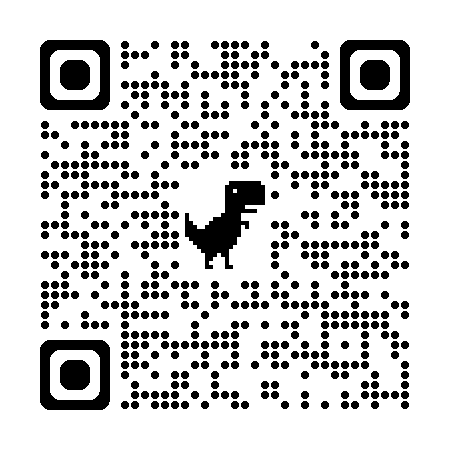

Ashlengail Victor
IT Professional & Front-End Developer
Bachelor of Science in Information Technology student at the University of San Carlos. I am a logical, independent thinker who takes a structured approach to problem-solving and software workflows. My long-term goal is to secure a remote technology role to build financial stability and comfortably support my future family.
View Resume

SCAN ME for Portfolio access